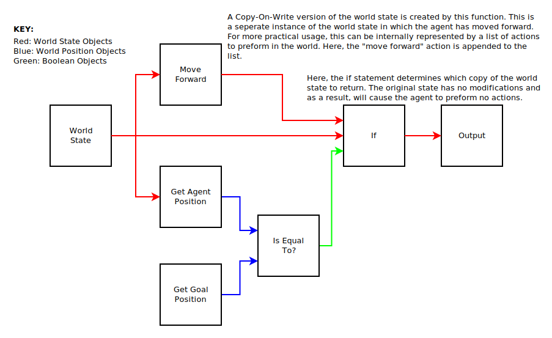

Node Graphs
NG-HASTE generates algorithms through the act of growing node graphs. A node graph is a collection of nodes and connections which describe how information should be passed through a algorithm. Each node can be thought of as a function while each connection can be thought of as data object being passed around.
In the image to the right, we have an example of a simple node graph. Each box represents a function while each connection between the boxes represents data flowing from function to function. Each function takes in a set of input variables and exports a set of output variables. NG-HASTE doesn't care about what the implmentation of a function is, simply what goes in and what comes out. (Additional optimizations can be made by allowing axioms to know the implmentation, but this is not required. More detail explained later.)
For the sake of simplicity, this example only shows variables being used once when passing between functions, however, variables can be used any number of times by adding more connections. When creating connections, an output variable coming from a function can be used any number of times. However, an incoming variable to a function may only have one value.
While there are many different ways a node graph can be created or used, NGHASTE has a few specific rules for what determines whether or not a node graph is valid. An invalid node graph will never be proposed as a solution.
-
The graph cannot contain any circular dependencies.
- No output of a node cannot directly or indirectly connect back into it's inputs.
-
All inputs of a function must be satisfied for the graph
to be complete.
- If a function requires two inputs, but only one is provided, the graph is considered uncompilable.
-
There is only one output node.
- This node can still have any number of input parameters. The purpose of this node is to determine the shape of the tree and can be used to run the tree to determine its state.
-
No node is considered part of the graph unless at least
one output is used.
- This excludes the output node. For all other nodes, the node is invalid if it's not being used. If you need to preform a function on an object that returns no value, the function can simply return the object it acted upon.
Parsing a Node Graph
Parsing a node graph is very simple and straight-forward. Information is always moving from left to right. The order in which functions are executed doesn't matter, as long as all parent nodes of a function are executed before the child. After all, you can't pass inputs to a function unless you know what those inputs are. Each connection is a value type object, so we don't have to worry about race conditions if we decide to parallelize the function, or sorting issues if we process things in a strange order.
The most common way to parse a node graph is to start at the output node. For that node, check if all parent nodes have been executed. If not, recursively call all parent nodes and check if their parents have been run. Once all parents have been executed, the target node can be run using the provided inputs. We can see this below with some Python Psuedocode.
# First, we create a temporary list of finished nodes.
# This shows us what nodes we've already calculated.
finishedNodes = []
# Next, we create an empty dictionary which pairs output
# plugs to what value they are holding after nodes are executed.
plugValues = {}
# The execute method runs a node function with a list of parameters
# and stores the returned tuple back into the plugValues dictionary.
def execute(node):
# Create a list of the parameters we will pass to the function.
parameters = []
# For each input plug, retrieve the value of the output plug
# which is connected to it.
for plug in node.inputs:
value = plugValues[plug.parent]
parameters.append(value)
# Run the node function.
returned = node.function.run(parameters)
# Lastly, store all new values back into the dictionary.
for i, plug in enumerate(node.outputs):
plugValues[plug] = returned[i]
# This method recursively executes the target node and all its
# parent nodes.
def calculateValues(node):
# If we've already calculated this node, do nothing.
if node in finishedNodes:
return
# Calculate all parent nodes, first.
for parent in node.parents:
calculateValues(parent)
# Execute this node, and add it to the finishedNodes list.
execute(node)
finishedNodes.append(node)
# Now we simply calculate the values of the output node.
outputNode = graph.outputNode
calculateValues(outputNode)
# We can freely read the outputs from the plugValues dictionary.
print(plugValues[outputNode.outputs[0]])
For objects which use branching inputs, such as loops or if statements, you can skill processing parameters which wouldn't be called, otherwise. In an if statement, for example, you would calculate the conditional parameter input, and depending on whether it evaluates to true or false, calculate values for only one of the two branches. This will allow you to save a lot of overhead in much larger node graphs.
Dealing with Object Values
As stated above, all objects are treated as value types. This is important as connections can be made to multiple other functions at once. Reference types would introduce sorting dependencies and would potentially lead to unexpected results in many cases. To combat this, by dealing with value types, each function soley interacts with a given set of input values and exports a new set of values. A function must always produce the same output if given the same inputs. In addition, a function cannot interact with objects outside of itself in any way. If modifying the world is required, it's best to pass in a world state as a data type into the graph as an input function, and accept a world state as an output function parameter. That world state itself can contain a list of actions which should be preformed on it, in order, to be executed after the graph has returned the final value. Let's take a look at a more visual example.
In the example above, you can get a better visualization of how information is passing through a node graph and how decision are being made. Here, we have a simple program in which an artificial intelligence agent is deciding whether it should move forward or stand still. The agent will move forward if it has not reached the goal, and will stand still if it has reached the goal.
This graph just deals with three different data types, as shown in the key. The world state describes what the state of the world would look like if that branch is taken. This can be seen at the if statement function where there are two existing copies of the world state. One where the agent has preformed no action and one where the agent has moved forward.
In practice, the world state can by insanely large. Creating a complete copy of this for every function would chew up a lot of resources. It's far more likely the world state would be implemented in a manner closer to this:
# This is the world state object. We'll make a new instance of this
# for each connection.
class WorldState:
def __init__(self, world, actions = []):
# The world variable is the actual state of the world. We
# won't edit it, so we can safely move this instance around
# without having to create new ones each time.
this.world = world
# We'll initialize our list of actions to be empty.
this.actions = actions
def getAgentPosition(self):
# When we grab the agent's position, we'll start by grabbiing
# it's actual world position.
pos = this.world.getAgentPosition()
# Now pass that position through each action, in order, in
# case some of the actions change the position.
for action in this.actions:
pos = action.getAgentPosition(pos)
# This is where the position would-be if we preformed all
# previous actions.
return pos
def addAction(self, action):
# If we preform a new action, we make a copy of this instance,
# add the action to that instance, and return that.
newWorld = WorldState(world, actions.copy())
newWorld.actions.append(action)
return newWorld
This gives us a significantly more useful method of managing data types within a graph. In addition, we can now see how object oriented programming can be implemented into a node graph. Simply turn each method of a class into a function, taking the object itself as both an input and an output.
The Search Tree
The main function of NG-HASTE is the search tree. By taking the full search space of all possible algorithms that can be generated and forming those into the shape of a search tree, we can search through it much easier. It also allows us to prune out branches which won't help us or prioritize branches that will help more.

Logical Axioms
To do.
Heuristics
To do.
Solution Tests
To do.
Fitness Functions
To do.